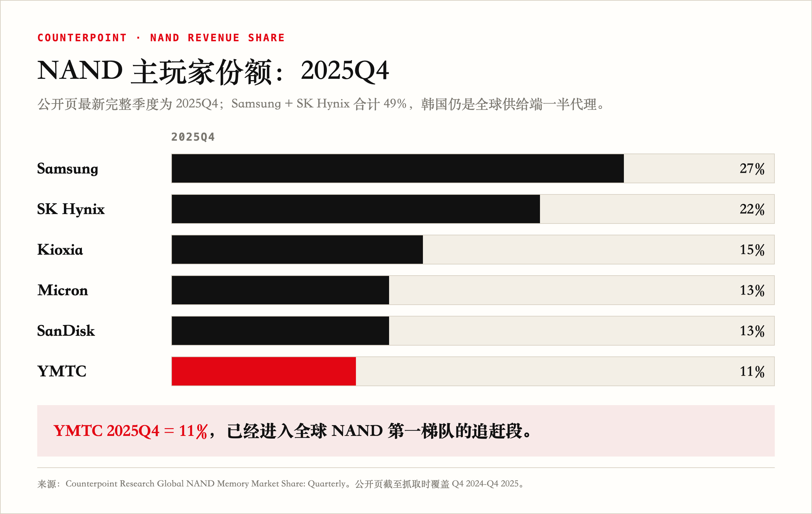
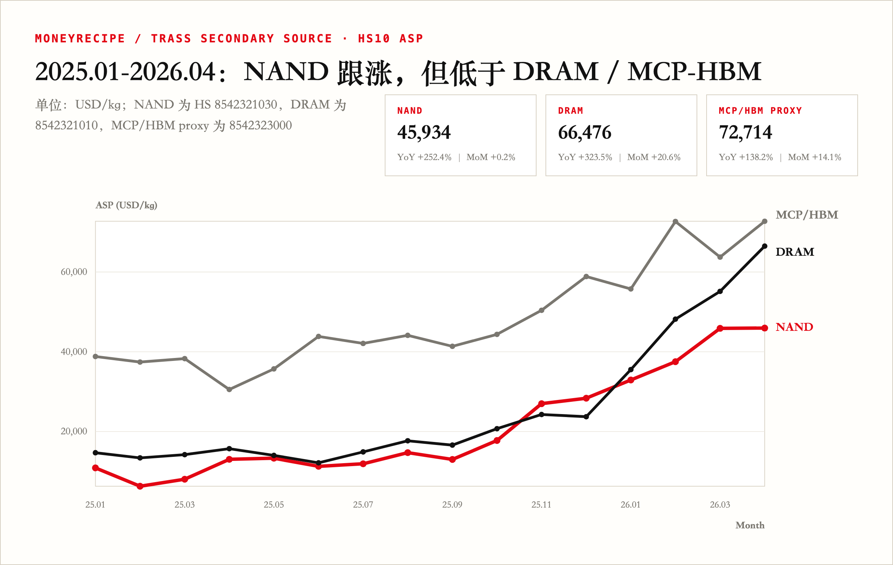
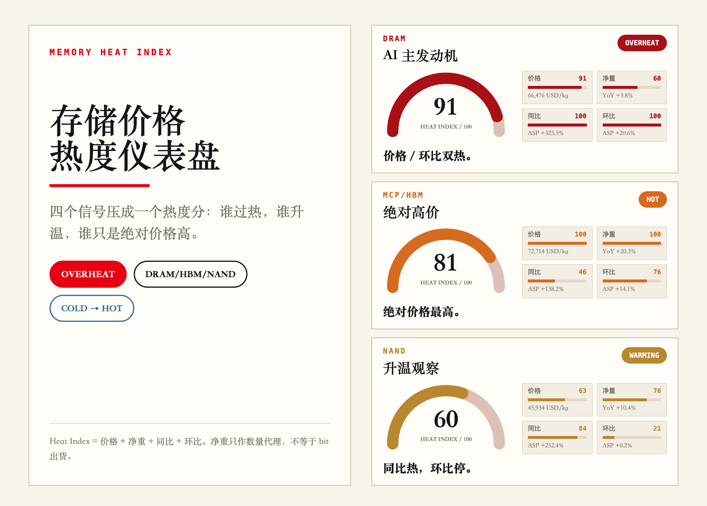
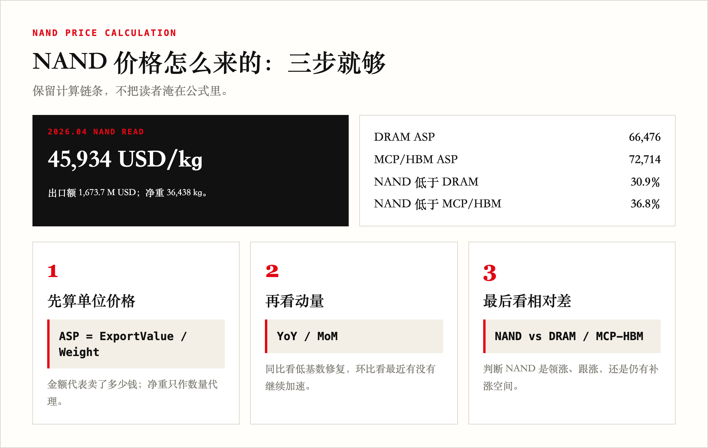
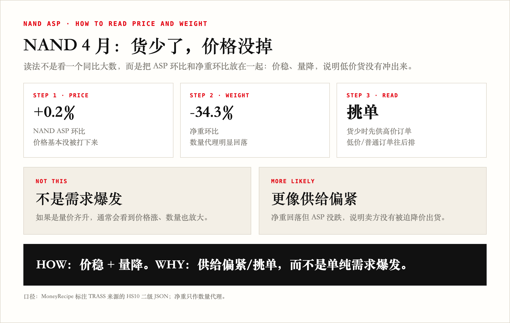
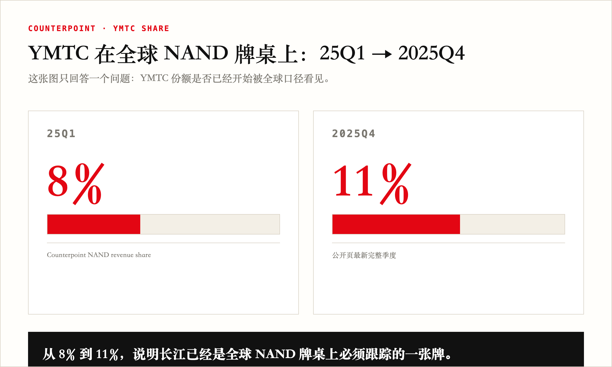
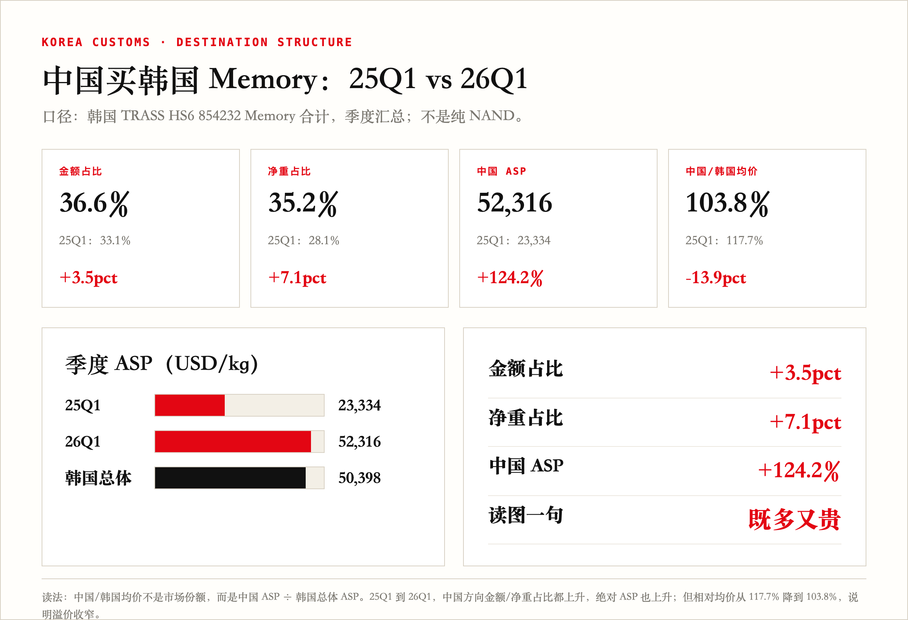
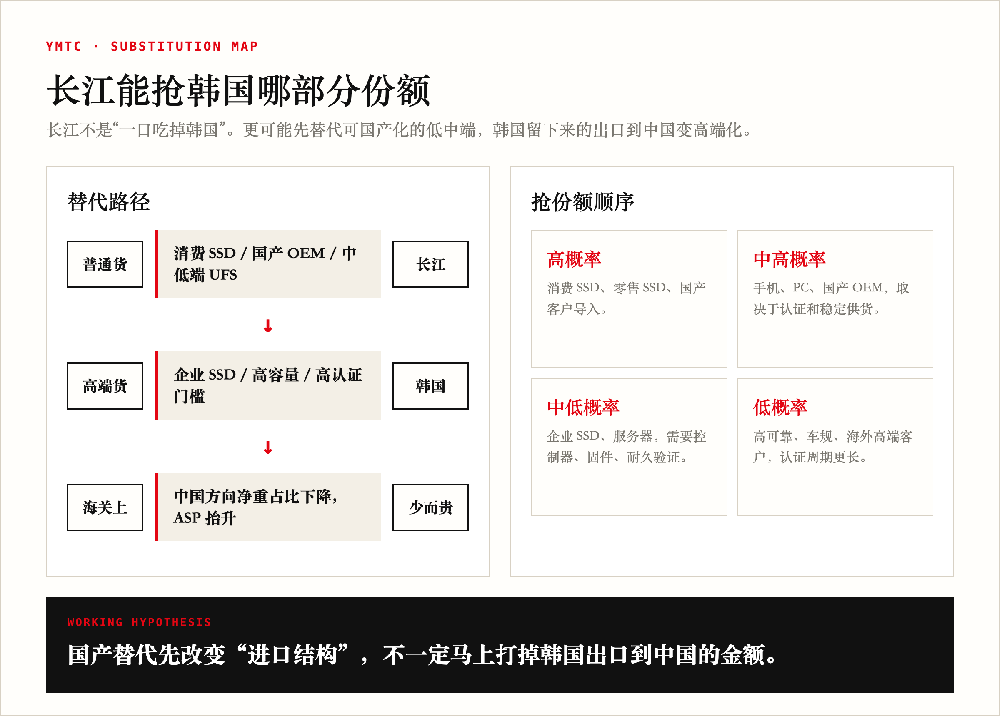
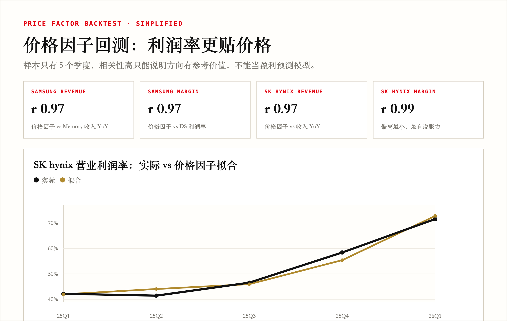

DRAM/HBM 之后，NAND 跟上了吗？——长江上市前能挖出点什么
这是「小散的 AI 仪表盘」栏目 · 存储节点第 2 期，接 DRAM/HBM 那一篇。
一张温度计看三件事：NAND 跟涨但不领涨；中国方向仍在买且更贵；长江存储还没披露，先用外部数据盯趋势。
上一篇我用韩国海关数据做了 DRAM/HBM 的温度计。这一期 NAND 那一格本来一直没开工。
直到 5 月 19 日，长江存储递了 IPO 辅导备案。
A 股投资人都知道一件事：长江上市之前，没有公开的 NAND 价格、收入、产能数据可看。你能看到的，都是已经反映在股价里的。真正能提前一步的人，都是在用外部数据猜里面是什么样。
韩国海关数据就是这种外部代理。我于是把 NAND 那一格补上了，挖出三件事。
NAND 已经升温，但不是领涨

Counterpoint 2025Q4 NAND 收入口径：Samsung + SK Hynix 合计约 49%——韩国海关 ≈ 全球供给端一半的代理。
（图里还能看到 YMTC 11%，05 节再回来讲。）

2026.04：NAND ASP 45,934 USD/kg，同比 +252.4%；但比 DRAM 低 30.9%、比 MCP/HBM 低 36.8%。
这一波涨价的发动机是 DRAM 和 HBM，NAND 是跟涨的那个。

为什么不用中国数据

国内能拿到的全是混合口径或付费墙：HS6 混了 DRAM/NAND/MCP，HS8 月度年费 5-30 万。Samsung + SK Hynix 占全球 49%——穿透中国 NAND，反而要绕道韩国。
价格怎么来的

ASP = 出口金额 / 净重。HS10 8542321030 是纯 NAND；HS6 854232 是 Memory 合计，混的，本文只在国别拆分时用。
常用代码速查：HS6 854232 = Memory 合计；HS10 8542321030 = NAND；8542321010 = DRAM；8542323000 = MCP/HBM proxy。
01 节的三个 ASP 都来自 HS10——能独立看价格；下面 05 节看国别，要用 HS6 合计。
4 月更像供给略紧

ASP 环比 +0.2%（走平），净重环比 -34.3%（大幅下降）。
读法：如果是需求爆发，应该量也放大；现在是净重降、ASP 没跌，所以更像供给端控量/挑单。
价没被打下来——这不是需求爆发，更像供给收紧/挑单。
中国仍是最大去向：既多又贵，但溢价收窄

Counterpoint 同口径里，YMTC（长江存储）2025Q4 收入份额约 11%。它不会被韩国海关直接反映，但会改变中国从韩国买什么。
这里有个时间差：厂商份额用 Counterpoint 最新公开完整季度 2025Q4；中国方向占比用韩国海关 25Q1 vs 26Q1。前者回答“长江有没有上桌”，后者回答“中国还在不在买韩国存储”。目前能看到的是：YMTC 到 2025Q4 已升到 11%；韩国海关里，中国方向 26Q1 金额占比、净重占比也都高于 25Q1。换句话说，预期不是“中国不买了”，而是仍在买，并且买得更多、更贵，只是结构在变。
YMTC 上来后，中国低端 NAND 不必都从韩国买，但高端还是要——这就是接下来对韩国出口到中国的数据的影响逻辑。

| 期间 | 中国金额占比 | 中国净重占比 | 中国 ASP | 中国/韩国均价 |
|---|---|---|---|---|
| 25Q1 | 33.1% | 28.1% | 23,334 | 117.7% |
| 26Q1 | 36.6% | 35.2% | 52,316 | 103.8% |
| 变化 | +3.5pct | +7.1pct | +124.2% | -13.9pct |
既多又贵：依赖回升，单价更高。但溢价收窄，说明韩国整体出口均价也在追上来。
本文全部份额和中国方向数据统一为 25Q1 vs 26Q1 季度口径，与 07 节海力士回测（25Q1-26Q1）对齐。
这和长江有什么关系
YMTC 232L 已追上三星 V8、海力士 200 层早期世代，消费级足够用，企业级还差一截。

图里两栏分别是替代路径和抢份额顺序。
所以韩国出口到中国的金额未必立刻坍塌——更可能先看到的是结构变化：低端被替代，高端剩下。
这支温度计以后怎么用

NAND ASP 拟合海力士 2025Q1-2026Q1：相关系数 0.98，但样本只有 5 个季度，NAND 收入季度最大偏离 39pct。这个回测只能说明价格方向有参考价值，不能当盈利预测模型。
另外要说一句口径对齐：海力士最新季报到 2026Q1（3 月），Q2 财报通常 7 月底才公布；而海关数据 2026.04 现在就有。这 2-3 个月的时差，正是这套温度计能提前看到的窗口——海力士 Q2 实际表现，先看海关。
结论要降一档：ASP 可以当利润率和周期方向的外部温度计；但收入还要看出货量、产品结构和公司口径，拟合只能参考。
下一期看：
- 5 月 NAND 是不是补涨
- 中国方向是否继续"既多又贵"
- 海力士/三星 Q2 财报和海关数据是否对齐
- AI 需求有没有从 DRAM/HBM 外溢到企业 SSD
数据来源与边界
- 韩国 TRASS HS6
854232Memory 合计 + MoneyRecipe HS10 二级 JSON（NAND/DRAM/MCP） - Counterpoint NAND revenue share：2025Q4 用于 Samsung + SK Hynix 49% 与 YMTC 11%
- 本文份额引用 Counterpoint 2025Q4，中国方向占比统一为 25Q1 vs 26Q1（基于 TRASS HS6 854232 月度合计）
- SK hynix NAND 收入由官方 Revenue by Product 占比估算
- data.go.kr 原始 HS10 接口需 serviceKey，作为下一步主口径替换
本文不构成投资建议。